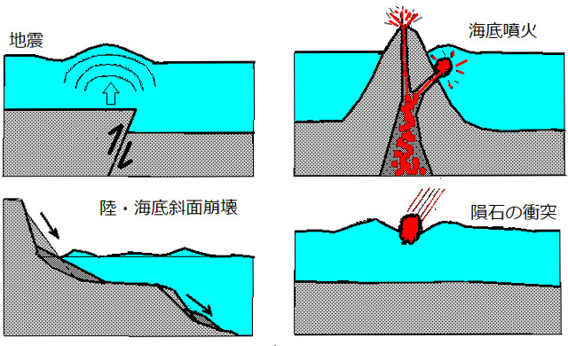

海嘯是怎麼形成的
海嘯的英文是「Tsunami」，源自日文「津波」的音譯。其中「津」意指港口，「波」則代表海浪，直譯即為「港口裡的浪」。
當海水受到大規模的垂直擾動時，就有可能引發海嘯。原因包括：海域的大規模地震、海底火山爆發、海底或沿海的山崩，甚至是隕石撞擊等。海嘯形成後，會以圓形水波的方式向四周擴散。
海嘯的傳播速度會受到海水深度的影響。在深度約 5000 公尺的深海中，海嘯的速度可高達每小時約 800 公里，與飛機的速度相當。隨著海嘯靠近陸地、水深逐漸變淺，傳播速度也會逐漸減慢，水深 100 公尺時，波速約每小時 110 公里，水深 10 公尺時，波速約每小時 36 公里。
由於後方較快的波會追上前方變慢的波，導致海浪堆疊、能量集中，進而讓波高迅速增加。海嘯在深海時可能僅有數公分高，但當接近沿岸時，波高可升至數公尺，甚至數十公尺高。

產生海嘯的原因
海嘯的傳播
地震造成的海嘯
海底地震是產生海嘯最常見的方式，當在海底發生大規模的地震，且斷層活動造成海床產生垂直位移時，海水會整體被抬升或下降，這時就會產生海嘯。
地震必須夠大、夠淺，才可能會產生海嘯，通常規模 7 以上、深度淺於 35 公里的地震，就有可能會產生海嘯。